HarborPoint Labs · a three-day voyage
Azure DevOps
for Managers
From work items to management intelligence.
12 hands-on labs3 daysFeature-level, decision-first
From work items to management intelligence.
Are we going to make it? What do you need from me?
Dana Whitfield · EVP, Member Experience
Who's been asked this in the last month? How long did your answer take?
Azure DevOps holds the answer. This course is about getting it out fast, honestly, and at the right altitude.
By Day 2 you'll answer Dana on one page. By Day 3 you'll brief her Executive Committee on the next PI.
"Steady hands. Safe harbor." A member-owned financial cooperative.
Fraud Detection & Security · Simone Laurent, CRO
Digital Banking Modernization · Priya Raman
Customer Support Modernization · Carmen Diaz
Branch Experience Transformation · Hector Alvarez
Platform Foundations · Nadia Petrova · enabler
Compliance: Examination Readiness · mandatory. Fieldwork starts Sprint 18.
"Busy but behind." Highest velocity in the program, one tester, and a growing bug pile.
"Steady and predictable." Lower numbers, delivers what it plans, sprint after sprint.
"Spread too thin." Priority number one and the mandatory exam work.
"The quiet enabler." Everyone depends on it; few people notice it.
"Small and steady." Serves the members who still walk in.
"The dashboard says we're failing." Is it the team, or the record?
Find, organize and interpret what's in Azure DevOps. Portfolio, sprint, queries, status report.
Labs 1–4
Dashboards that answer questions, metrics read honestly, dependencies across teams, an executive briefing.
Labs 5–8
Forecast honestly, prioritize by member impact, fix the data, and brief leadership on the next PI.
Labs 9–12 (capstone)
Two-week sprints. Four sprints to a Program Increment. The labs never quote calendar dates, only sprint and PI names.
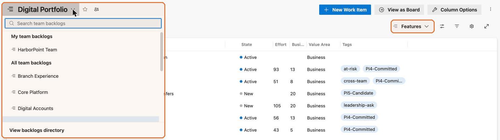
P##. Your sandbox team is P## Sandbox.Shared Queries/Training/P##.Commit to a guess before you look. Then check it. It's how you learn which numbers fool you.
The plausible-but-wrong conclusion the data invites. Usually right after you've hit it.
The durable management lesson, the one you'll use back home.
One sentence that closes every Part. Collect them: they become your Field Card.
From work items to management intelligence. Find, organize and interpret what's in Azure DevOps to answer the questions managers actually get asked.
Before you meet the teams, learn the portfolio. By lunch I'd like you to be able to tell me what every Digital Feature is for, who's building it and how far along it is.
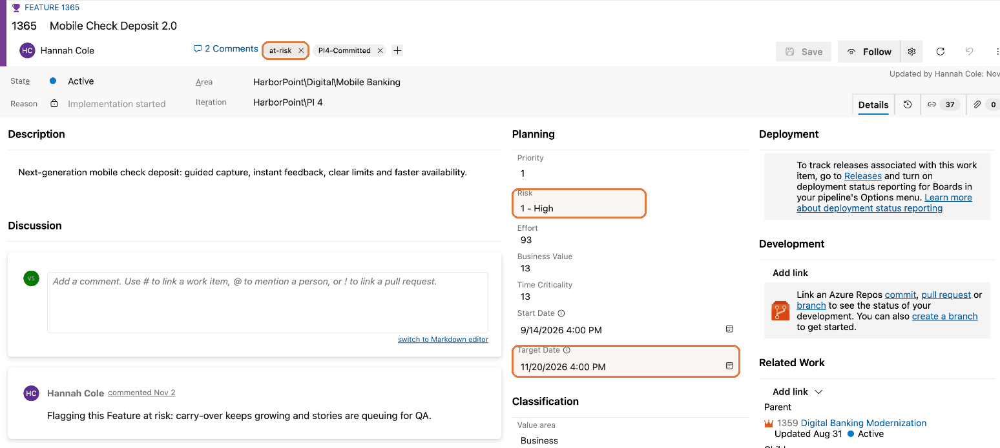
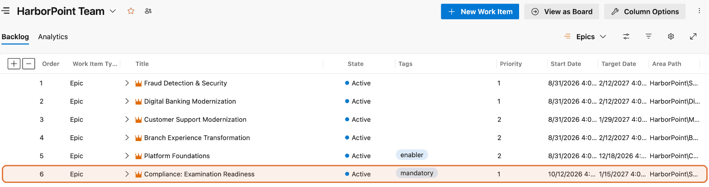
!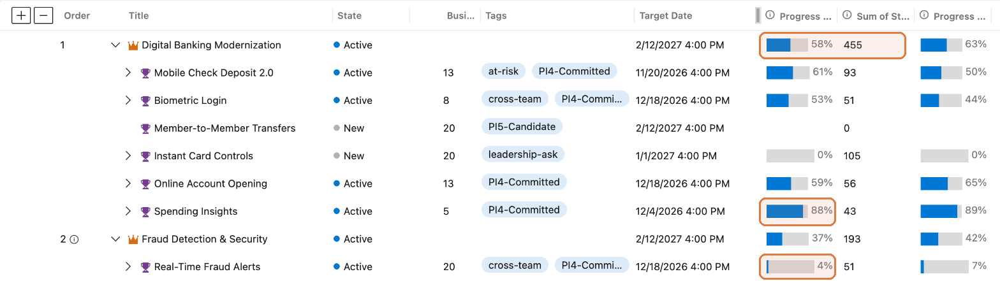
A backlog never shows closed items at its own level, but the Epic's rollup still counts them: Mobile App Redesign (55) and Paperless Statements (52). Find them in the Features board's Closed column.
| Feature | Value | Progress |
|---|---|---|
| Spending Insights | 5 | 88% |
| Real-Time Fraud Alerts | 20 | 4% |
| Instant Card Controls | 20 | 0% |
Progress tells you how far along the work is, not whether it's the right work. Ask Digital Accounts, which owns Spending Insights and Card Controls, before you judge.
Every Feature at once. Can't say why.
History, Discussion, tags. One item at a time.
Columns and WIP. No calendar.
Teams, dates, milestones, dependencies.
Rollup counts only Closed. Close those two stories and Biometric Login reads about 69%. Across Mobile, 11 finished points wait for the same tester, and Active reads 16/5 against a WIP limit of 5.
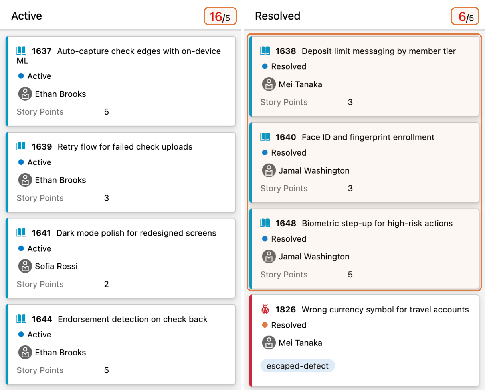
| Question | Where it lives |
|---|---|
| Who owns it? | Area Path |
| Which priority does it serve? | Parent link |
| Who builds it? | Its children's areas |
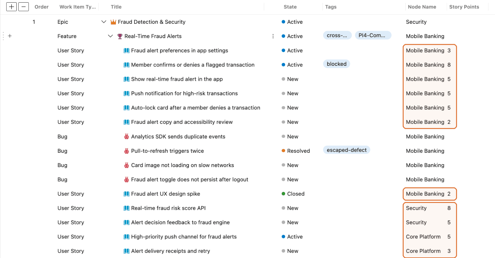
The backlog order is the decision. When it disagrees with reality, don't quietly fix the list: find out who should decide, and ask them.
Dana stopped me last night: "Why has mobile banking fallen behind?" I need a readout from you at 10:00. Feature level please. Five bullets.
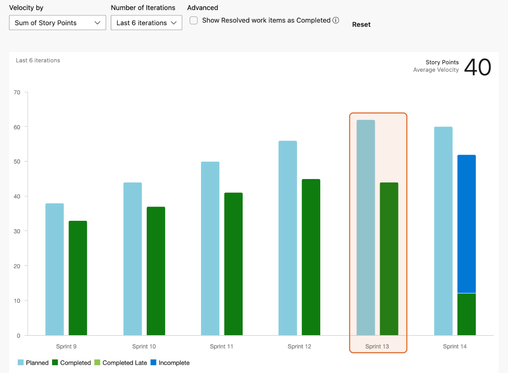
Completed ÷ Planned story points, per sprint. Each team against its own plan.
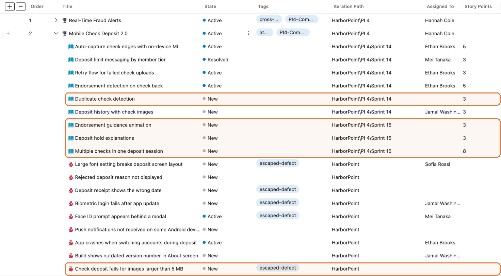
A Priority 1 bug on Check Deposit with nobody assigned.
→ Check Deposit
Ethan Brooks has six active items across Check Deposit and orphan work.
→ Check Deposit + no Feature
Two Check Deposit stories untouched for 9–10 days.
→ Check Deposit
+5 points of unplanned work added on days 3 and 4.
→ no Feature
52% of Sprint 13's points served no Feature at all.
→ no Feature
Open bugs: 9 → 42 in five sprints.
→ Check Deposit, and every Feature after it
The velocity chart can't see the difference. Only a query by parent Feature can.
Share of Mobile Banking's completed points on stories with no parent Feature.
In Sprint 13, only 21 of 44 points moved any Feature.
Velocity tells you how busy a team was, not what it delivered. For every velocity number, ask which Features the points moved.
Thirty years, and every Monday somebody asks me the same five questions. Build them once, and name them like the question they answer. And when one says "eight Features at risk", don't forward it. Read it.
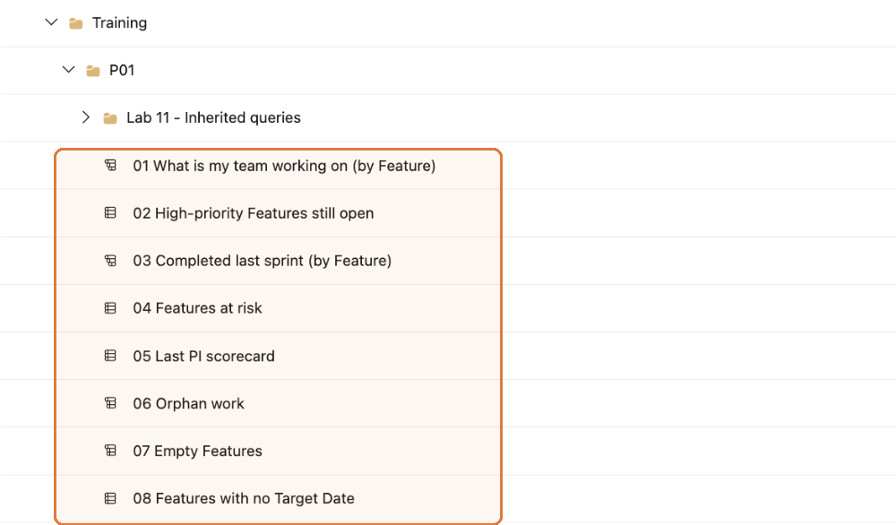
Lists, counts and the only type that can be charted.
Features with their child stories. Busy vs. what the work bought.
Orphans, empty Features, dependencies. Including "does not have" links.
@CurrentIteration picks a sprint, not a team.Resolves to the current sprint of the team named in the query's team parameter. Nothing else. It doesn't filter by team.
Pair it with an Area Path clause, and check whose calendar the team parameter reads. Then the query stays true next sprint.
| Field | Op | Value | |
|---|---|---|---|
| Work Item Type | = | Feature | |
| ┌ | Target Date | <= | @Today + 21 and not Closed |
| │ or | Risk | = | 1 - High |
| └ or | Tags | Contains | at-risk |
Saved as 04 Features at risk. A filter only finds what people remembered to record.
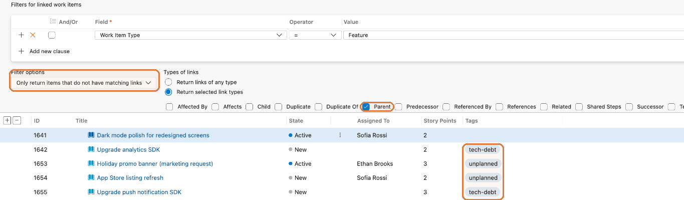
Stories with no parent: "Only return items that do not have matching links."
Features with no children: Member-to-Member Transfers, value 20.
Flip the operator. If it still says zero, believe it.
A saved query is a definition everyone inherits. Name it like the question it answers, and read the result before you forward it.
One page. Marcus will be in the room, so every number needs to survive "how do you know?" And please don't hand me a green status unless it's actually green.
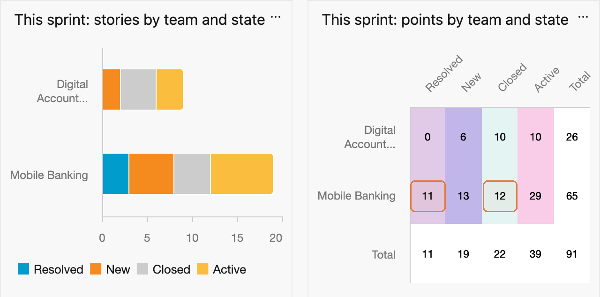
Story Points are each team's private currency. Compare each team with its own plan: Completed ÷ Planned, and its trend.
Open bugs at the end of each sprint.
escaped-defect: members found themA pie of item counts weighs a 1-point story like a 13-point one.
A trend window can be picked to hide the climb.
Two teams' points on one axis. Different currencies.
"61% done" hides 36 points left, due this sprint.
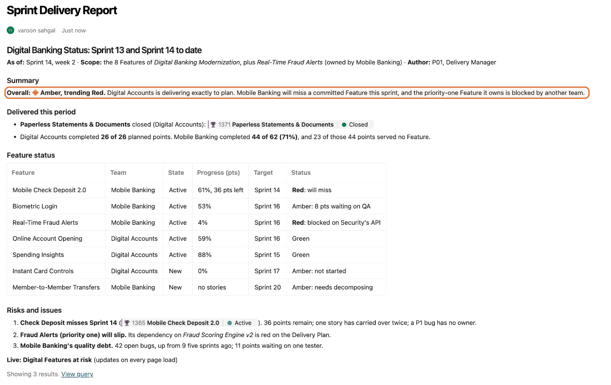
A status color is only as good as the sentence next to it. Report what's left against the time left, and end with a decision you need.
Turning information into management decisions. Dashboards that answer questions, metrics read without being fooled, and visibility across teams.
Your queries yesterday were exactly right. Now I'd like to stop asking for them. One page I can open before any meeting. If Dana could read a version of it without a translator, even better.
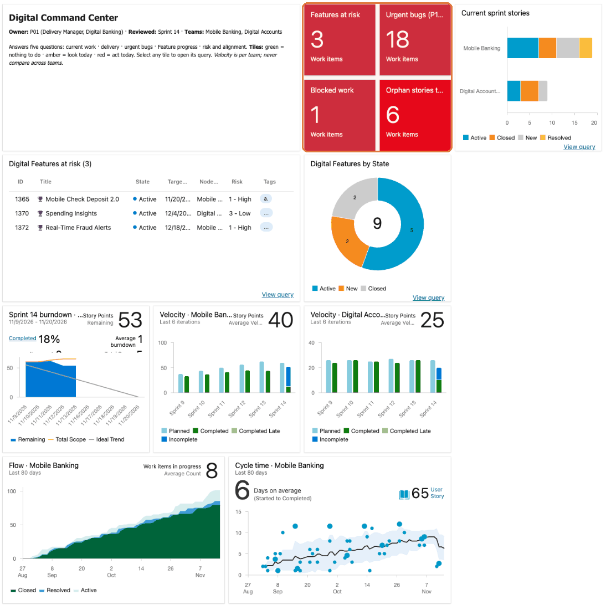
| # | Priya's question | Widget that answers it |
|---|---|---|
| Q1 | What are both teams working on, and is the sprint on track? | Chart by Feature and State · Burndown |
| Q2 | What have we delivered, and is delivery steady? | Velocity, one per team |
| Q3 | Are there urgent bugs, and are they growing? | Query tile + trend |
| Q4 | How are Features progressing toward their dates? | Features by State · at-risk list |
| Q5 | What's at risk or blocked, and is effort going where it should? | Risk, blocked and orphan tiles |
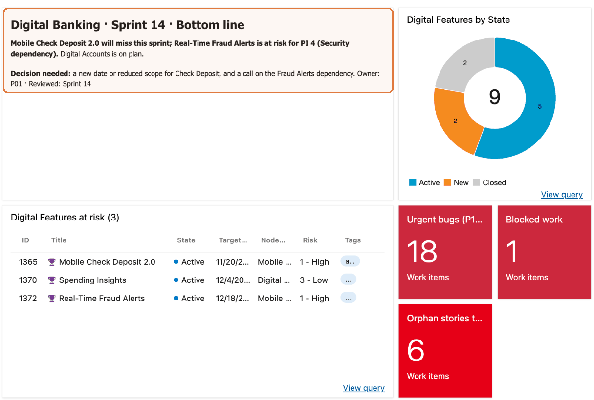
A dashboard is a set of answers, not widgets. If you can't say which question a widget answers, or its scope doesn't match the page, take it off.
Make the gut call before you see the evidence. Write it down.
Priya, 9:12 AM: "Someone saw 44 against 26 and asked if Grace's team needs support. Diego tells me Mobile is drowning. I'd rather not guess."
Velocity, throughput (count), commitment reliability.
Cumulative flow, cycle time, work in progress.
Bugs left behind, work that reached a Feature.
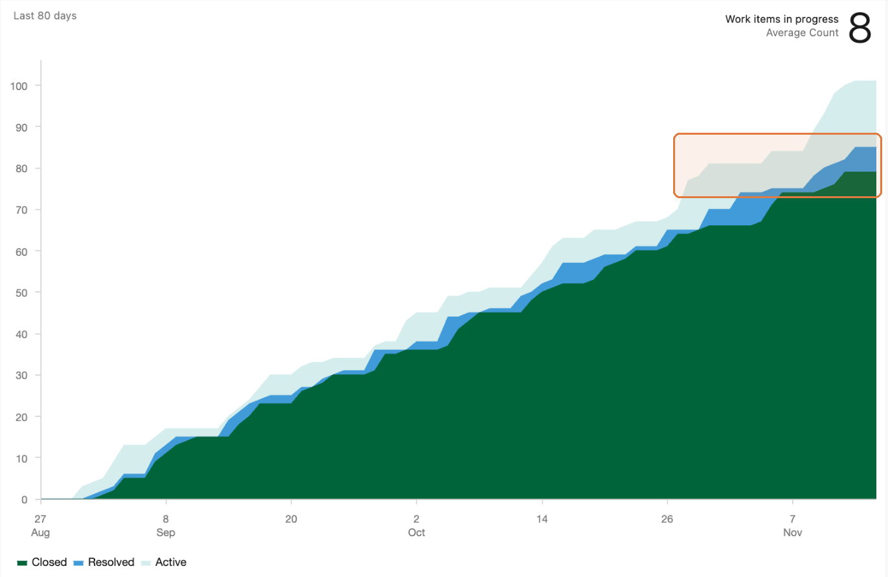
Digital Accounts holds steady at 4–5 days.
Digital Accounts' lower throughput is a capacity fact to plan around, not a problem to fix.
Never judge a team on one chart. Find three signals that agree across output, flow and outcomes, then change the system, not the number.
I don't do secondhand. Tell me who's waiting on whom, how late it really is, and what my options are, with what each one costs.
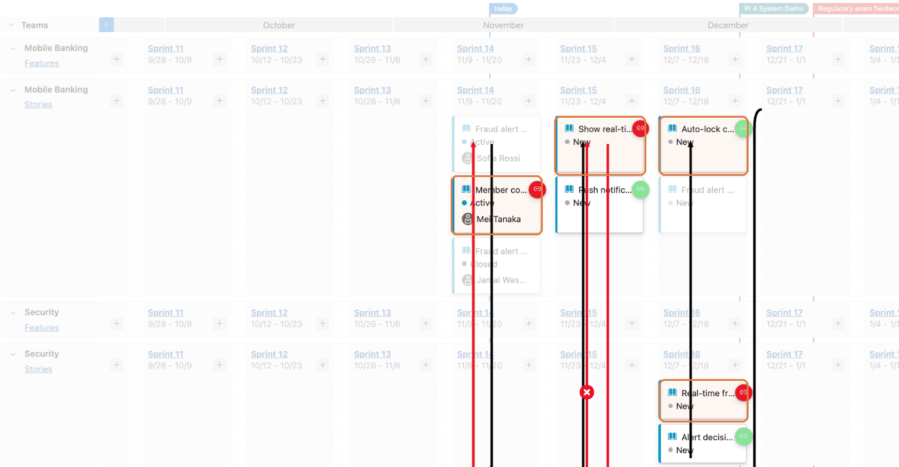
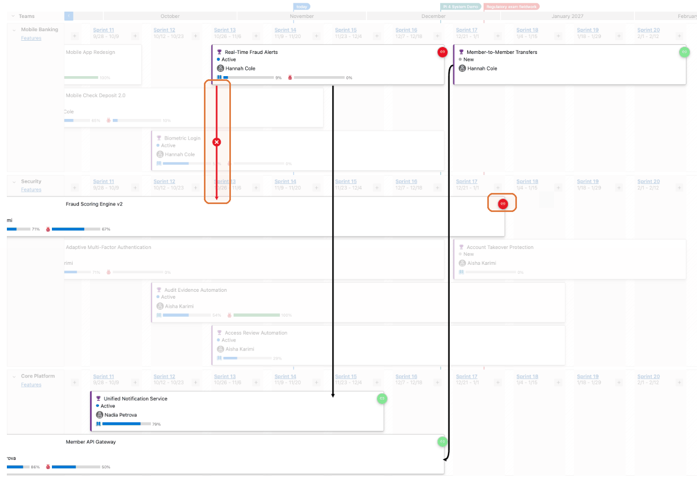
Security · ends Sprint 17
Mobile Banking · due Sprint 16
The line tells you two end dates disagree. Not why, not by how much, not what to do. That part is your job.
The plan shows three. The story links show four. That gap is the lesson of this lab.
| Predecessor | → Successor | Status |
|---|---|---|
| Risk score API · Security · Sprint 16 | Confirm or deny a flagged transaction · Mobile · Sprint 14, blocked | 2 sprints early |
| Risk score API · Security · Sprint 16 | Show real-time alert in app · Mobile · Sprint 15 | conflict |
| Decision feedback · Security · Sprint 16 | Auto-lock card · Mobile · Sprint 16 | same sprint |
| Push channel · Core Platform · Sprint 14 | Push notification · Mobile · Sprint 15 | ok |
| Card lock API · Digital Accounts · no sprint | Auto-lock card · Mobile · Sprint 16 | invisible |
| Option | Effect on the date | Risk | Who pays | Who decides |
|---|---|---|---|---|
| 0 · Do nothing | Misses PI 4, found at the System Demo | Maximum surprise | Members, trust in PI commitments | Nobody. That's the problem. |
| 1 · Re-sequence Security | Sprint 16 possible, not certain | Sprint 15 already over capacity | Adaptive MFA slips | Simone, with Aisha |
| 2 · Contract-first | Shortens everything after the API | Contract changes cause rework | A little rework in Mobile | Hannah and Aisha |
| 3 · Descope the MVP | Sprint 16 realistic for alerts + confirm/deny | Members lock cards another way for a PI | Auto-lock waits a PI | Simone, Hannah, Priya |
| 4 · Borrow Core Platform | Could pull the API forward | Ramp-up and fraud-system access | Core Platform's spare capacity | Nadia and Aisha, via Ruth |
| 5 · Move the date | Sprint 17, honestly | Fraud exposure lasts a sprint | PI 4 credibility | Dana and Simone |
| 6 · Fix the ranking | None this PI; prevents the next | An uncomfortable conversation | Nothing new: the cost becomes visible | Simone and the ExCo, with Ruth |
| 7 · Question the link | Could decouple from the engine's Sprint 17 | Rework when v2 lands | Security | Aisha and Hannah |
A plan with no red lines is not a plan with no risk. Most cross-team bottlenecks are priority decisions nobody made, so bring options and name who decides.
Send me one page: are we going to make it, what are the two things that worry you most, and what do you need me to decide?
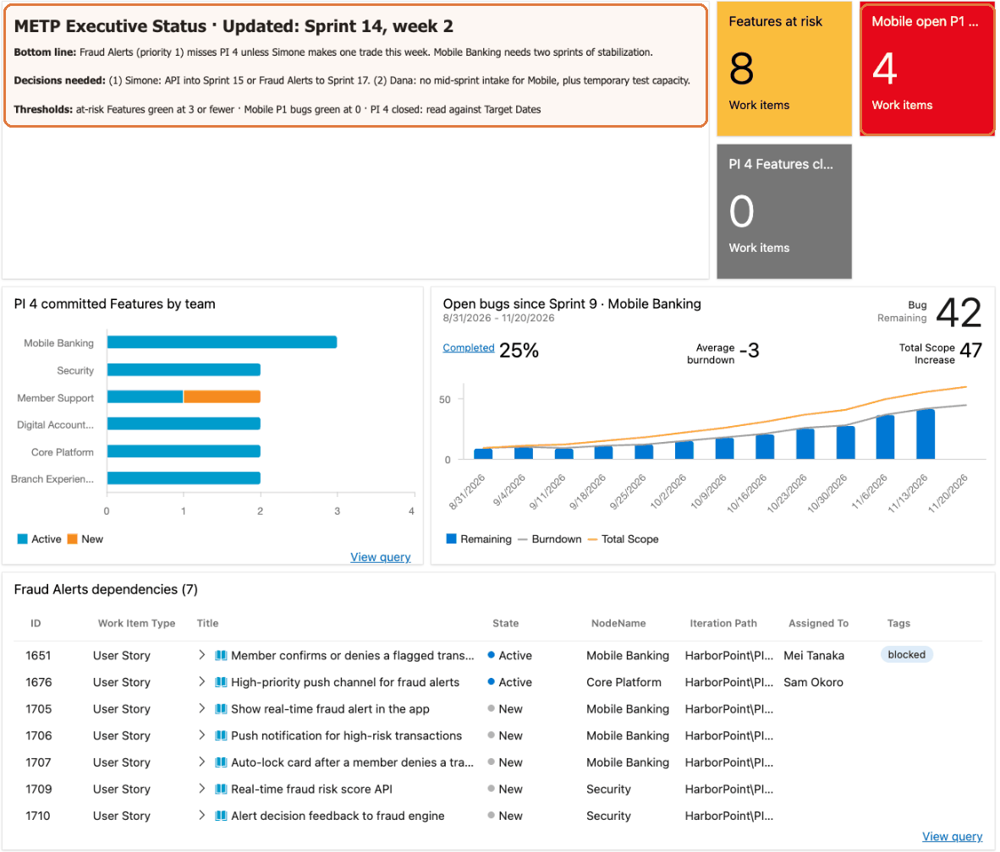
4% done. The API it needs lands in Sprint 16, squeezed by mandatory exam work.
71% of plan, 42 open bugs with 3 Critical, Check Deposit misses this sprint.
42 open bugs, 3 Critical, 4 at P1
Members are finding defects in production, including a deposit failure nobody owns yet.
Fraud Alerts 4% done
Every sprint without it, members learn about fraud from their statement, not their phone.
71% of plan delivered
Every Mobile date is about 30% optimistic.
It's week 2 of PI 4's second sprint, and Features close near their Target Dates. Only Check Deposit is due now, and it won't close. That's the red.
An executive should be able to stop after two sentences and still know what to do. Every number on the dashboard sits next to a threshold or a baseline.
METP Executive Status · Updated: Sprint 14, week 2
Bottom line: Fraud Alerts (priority 1) misses PI 4 unless Simone makes one trade this week. Mobile Banking needs two sprints of stabilization.
Decisions needed: (1) Simone: API into Sprint 15, or Fraud Alerts to Sprint 17. (2) Dana: no mid-sprint intake for Mobile, plus temporary test capacity.
Thresholds sit underneath: at-risk Features green at 3 or fewer · Mobile P1 bugs green at 0 · PI 4 closed read against Target Dates.
You, Ruth, the Product Owners. Unblock and re-plan inside the PI. Every red item leaves with an owner.
Dana and the executives. Decide trade-offs between priorities, update the Epic rank, record decisions.
Executives don't need everything you know. Give them the answer first, the two risks that matter, and a decision one named person can say yes or no to.
Planning ahead and connecting delivery to business value. Ruth is retiring, and Dana has asked you to take the helm as Acting Program Manager.
Members need Instant Card Controls before holiday travel. All of it, by the end of Sprint 17. Can we do it? I'd like a yes, but I'll take a true answer.
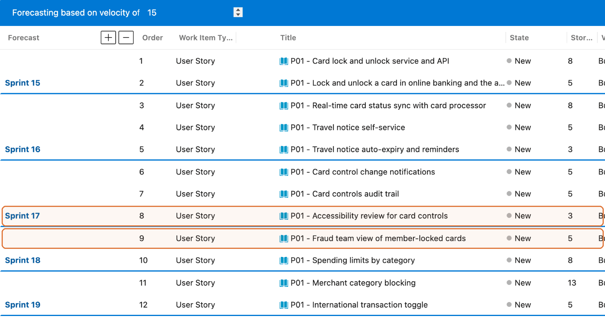
All of it: impossible. The 44-point MVP: it fits, with about one point of buffer.
Paper: 3 sprints × 25 = 75. Reality: 0.5 points per engineer-day, minus who's out and what's committed. Full Card Controls (105 + 4 unknowns) is impossible. The MVP fits with about one point of buffer, which is no buffer.
| Velocity typed in | Lands by Sprint 17 | MVP? |
|---|---|---|
| 25 · the average | #1–#12 · 73 pts | yes |
| 20 | #1–#10 · 55 pts | yes |
| 15 · the real capacity | #1–#8 · 42 pts | misses |
| 15, with "should" #5 moved below the MVP | The whole MVP · 44 pts | fits |
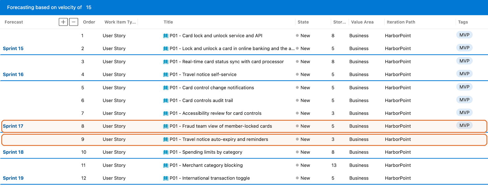
If Digital Accounts can't do all of it, give it to Mobile Banking. They have the highest velocity in the program. Problem solved?
Velocity is each team's private currency, and Mobile's is inflated.
Mobile is the busiest team: 71% of plan, 42 open bugs, one tester.
Commit the MVP by Sprint 17 with its risk stated. The rest in PI 5. Estimate the four unknowns now.
Velocity is a rate, not a promise. Subtract who's out and what's already committed, then answer 'can we?' with a range and a better option.
HarborPoint is redesigning member onboarding. Two executives, two numbers, one backlog.
Members onboarded in a branch hold 2.1 products after a year. Digital-only: 1.4. I'm asking you not to design Dee out of her own credit union.
58% of new members start online, and 41% of those applications die at ID verification. That's the leak.
Retired shipyard bookkeeper. 41-year member. Low digital confidence, fraud-wary. Values a named person.
Apprentice marine electrician. Applies at 11 pm, expects instant approval, abandons at friction.
Military spouse who relocates often and runs a small online business. Needs save-and-resume.
Given Dee is with a staff member, when her ID is scanned, then she sees the staff member's name on the confirmation and gets a receipt.
Given it's 11 pm, when Jordan captures his ID, then he sees an accept-or-retry result within minutes, with no call-back.
Given Amara saved her application online, when she arrives at any branch, then staff open it with zero fields re-entered.
In the model answer, all three are digital-first: camera ID capture, zero re-entry, status at any hour.
Score = Reach × Impact × Confidence ÷ Effort
| Story (model answer) | Persona | Reach | Impact | Conf. | Effort | Score |
|---|---|---|---|---|---|---|
| Camera ID capture, decision in minutes | Jordan | 3 | 3 | 1.0 | 5 | 1.80 |
| Branch opens the online application, zero re-entry | Amara | 2 | 3 | 0.8 | 3 | 1.60 |
| Application status, any hour | Jordan | 3 | 2 | 0.8 | 3 | 1.60 |
| Digital set up in branch by a named person | Dee | 2 | 2 | 1.0 | 3 | 1.33 |
The member doesn't see your org chart. A persona only changes what gets built when it reaches the acceptance criteria.
Your dashboard says we've collapsed. My team has never worked harder. Either the dashboard is wrong or I am, and I'd like to know which before Dana reads it again.
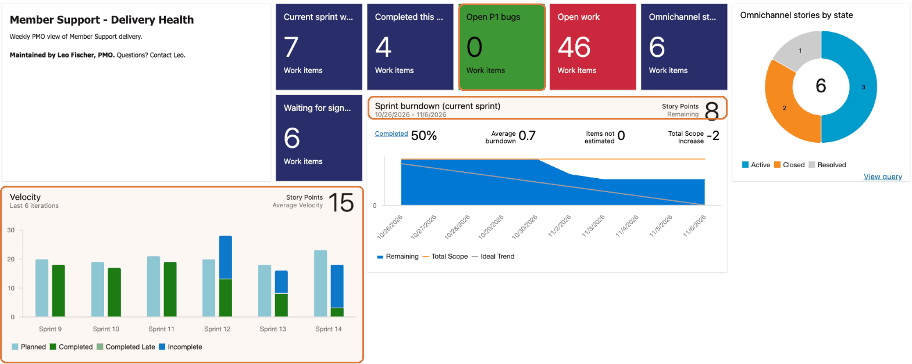
Finished stories were left in Resolved, and one closed story had no points. The chart computed perfectly from a wrong record.
Member Support velocity, story points. Planned held roughly steady the whole time.
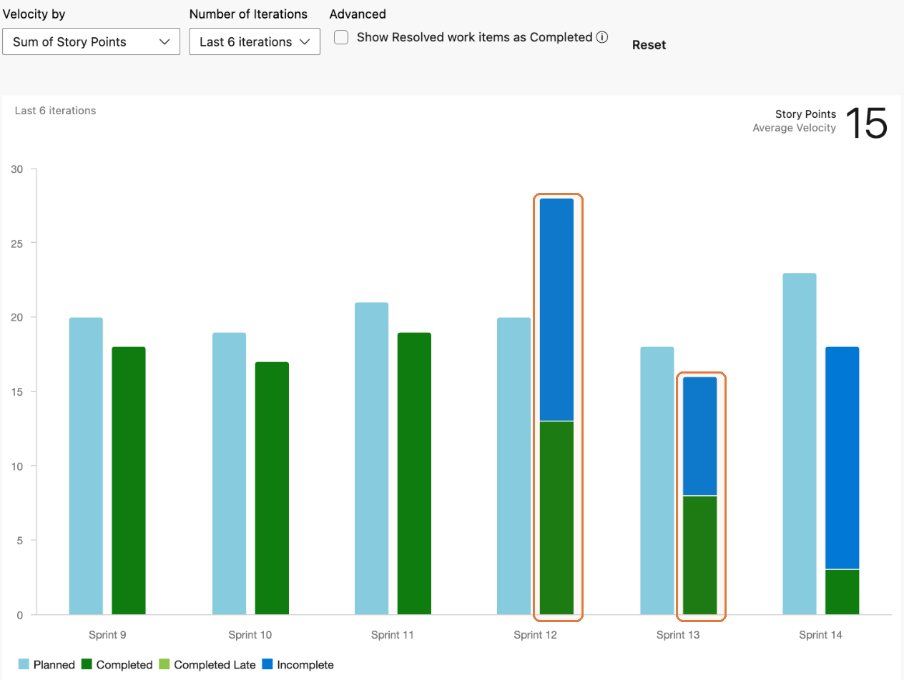
Data: done-but-Resolved · missing points · a leaver's work · Sprint 12 zombies · P1 bugs at the root area · tag drift · stale Feature states · a duplicate. Queries: a typed-in sprint · "open" means <> Closed. Widget: burndown pinned to last sprint. Access: a tile on a private query.
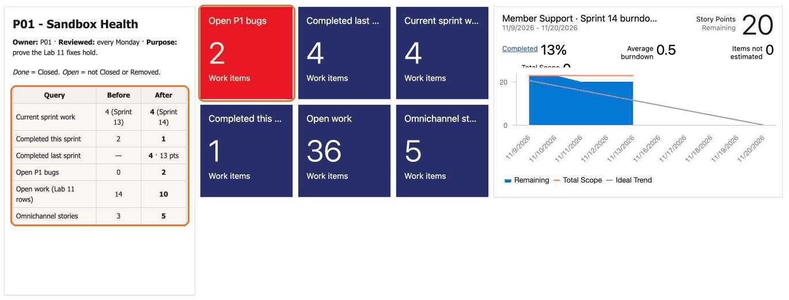
When a team's numbers fall off a cliff, suspect the record before the team. A chart can be computed perfectly from data that is wrong.
Executive Committee in 150 minutes. Give me a realistic outlook for PI 5 and the decisions you need from us. If there's bad news, I want it first.
Don't trust a number until you know who typed it.
Real-Time Fraud Alerts, and Check Deposit · Labs 2, 7
Mobile carry-over and 42 bugs · Labs 2, 6
Mobile at 71% of plan · Labs 4, 6
Security ↔ Mobile ↔ Core Platform, plus the unscheduled card-lock API · Lab 7
Personas, research and a new pulse survey · Lab 10
Capacity, ranges and trusted numbers · Labs 9, 11
An evidence board, trusted metrics, a P## - PI 5 Outlook dashboard (8 widgets or fewer), a capacity worksheet, a decision table and a BLUF.
Lands at minute 70: the exam date moves up, the branch gets reinforcements, or a Sev 1 hits mobile deposit.
Five minutes to brief, three minutes of executive question cards. Present from your dashboard, not slides.
Open your crew's card. The facts just changed. Update the plan, don't start over.
Exam fieldwork now starts in Sprint 17.
Two more onboarding staff, and a renewed request for an engineer.
The whole Mobile team on the fix for all of Sprint 15.
No. Its Iteration Path still says PI 4, so a PI 5 query can't see it.
| Team | Per sprint | Caveat |
|---|---|---|
| Digital Accounts | ≈ 25 pts | Steady |
| Security | ≈ 21 pts | ~half mandatory until S18 |
| Core Platform | ≈ 20 pts | Enablers |
| Member Support | ≈ 18 pts | True, not the dashboard |
| Branch Experience | ≈ 17 pts | Small, steady |
| Mobile Banking | ≈ 12 stories | Count, not inflated points |
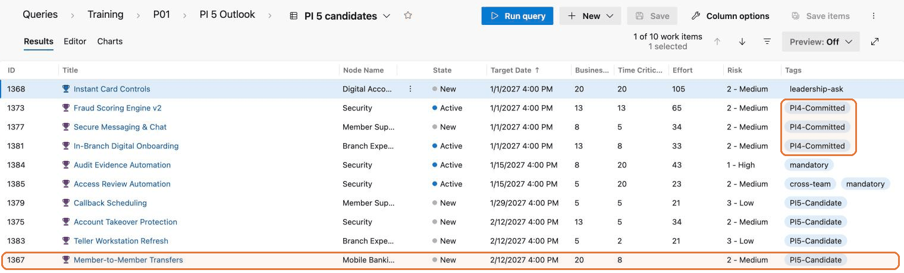
What's sized and staffed, from capacity you trust, stated as a range.
What depends on a decision. Name the decision, its cost and its owner.
Unsized, untrusted or undecided. Say so plainly, with what it would take.
Bottom line: will PI 5 deliver what we need? Yes, no, or it depends, and on what?
How do you know? Which number would you bet your job on, and which one wouldn't you?
Members over 55 are booking branch appointments 28% more. Why isn't the branch first?
Mobile Banking has the highest velocity in the program. Why aren't you giving them more?
Strong answers start with the answer, name the source, put uncertainty in numbers, and turn a challenge into a decision.
The data won't decide for you. Know who typed each number, speak in ranges, and get the right people to make the trade-offs on purpose.
Status, risk and progress in Features. Drop to stories only to prove a point, then climb back up.
Labs 1 · 2 · 5 · 7
Estimates inflate, records drift, tools skip what they can't see. Check how a number is made before you quote it.
Labs 3 · 4 · 6 · 9 · 11
A report is a request for decisions. Bring options with costs, and the one person who can say yes or no.
Labs 4 · 7 · 8 · 12
Three days ago that question took a week and a slide deck. Now: three parts, every number one click from its evidence.
"The MVP lands by Sprint 17 if we protect Digital Accounts' capacity. The rest moves to PI 5."
"Members are finding defects in production, and fraud alerts reach them a PI late."
"Simone: the API into Sprint 15, or Fraud Alerts to Sprint 17. I need it this week."
Every lab ends with three moves to make in your own Azure DevOps. Start with these five, about 30 minutes each.
Add three rollup columns to your Features backlog. Per user, so you change nothing for anyone else.
Lay your top backlog next to the last written priority list. Note every disagreement and who could settle it.
One direct-links query: how much of last sprint's work served no Feature?
Name, last-reviewed date and what each color means, on the page itself.
Three hygiene queries whose healthy answer is zero, looked at weekly with the team.
Pick one move. Put it in your calendar before you leave this room, before Monday books you.
Every management query from the course, with clause tables and WIQL.
What each metric measures, what it means, and how it misleads.
Status report, BLUF briefing, persona canvas, options matrix.
Every term, defined once, the way the course uses it.
Every lab's one thing, key takeaways and Monday moves, on one printable page.
All twelve labs, with hints, checkpoints and quizzes.
Don't trust a number until you know who typed it.
Ruth Ellison, thirty years at HarborPoint · Steady hands. Safe harbor.